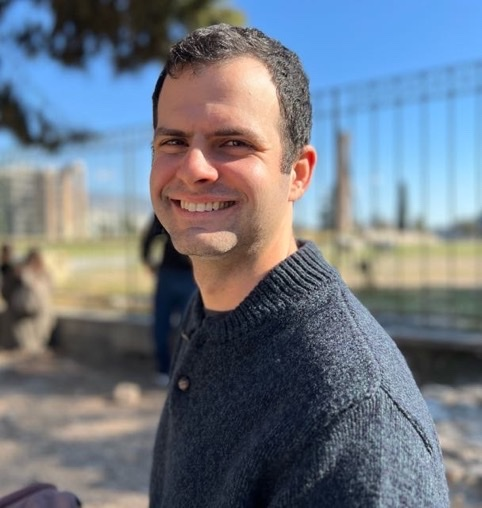

I am a Computer Science PhD student at Tel Aviv University, advised by Dr. Yoav Levine. Previously, I was a machine learning researcher at the SLAMPAI lab at JSC (Jülich Supercomputing Centre) and completed my M.Sc. thesis in Computer Science at Tel Aviv University under the supervision of Dr. Yair Carmon.
My research interests revolve around developing and scaling robust AI reasoning mechanisms that are both efficient and generalizable.
Publications
Scaling Laws for Robust Comparison of Open Foundation Language-Vision Models and Datasets [code] [checkpoints]
with Marianna Nezhurina, Giovanni Pucceti, Tommie Kerssies, Romain Beaumont, Mehdi Cherti, and Jenia Jitsev.
Conference on Neural Information Processing Systems (NeurIPS), 2025.
Resolving Discrepancies in Compute-Optimal Scaling of Language Models [code] [checkpoints]
with Mitchell Wortsman, Jenia Jitsev, Ludwig Schmidt, and Yair Carmon.
Spotlight at Conference on Neural Information Processing Systems (NeurIPS), 2024.